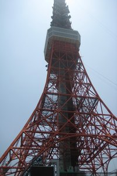
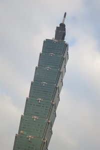

Tokyo Is Gorgeous!

Tokyo is the capital and the largest city of Japan.
The city is super busy, and yet very beautiful and clean. The city is full of tall skyscrapers and the people in Tokyo are always in hustle and bustle. The people speak Japanese and they don't speak English very well. When you walk on the street, you always feel like you walk too slow. The transportation system is exceptionally advanced and the trains can bring you to almost every corner of the city.The streets are unbelieveable clean all the times. The Japanese food is good and the people there are nice. Tokyo is very fun to visit and you don't want to miss it!
Come see my journey in Tokyo!
Taipei Is Awesome!

Taipei is the capital of Taiwan.
It is the cultural, political and economical center of the country. The city also has a lot of tall commercial buildings and the people in Taipei are also very nice.They speak mandarin and don't speak English much. Taipei also has a very advanced transportation system and you can easily find the bus and train stations. Taipei is also famous for its night markets and these night markets are full of authentic Taiwanese street foods. The food is yummy and the people are great. Taipei is a great city which you want to go visit again!
Come see my journey in Taipei!
Seoul Is Wonderful!

Seoul is the capital of South Korea.
It is the political and economical hub of the country. The city is full of high skyscrapers and traditional Korean houses. Just like Tokyo and Taipei, it has an extremely dense and advanced transportation system. There are a variety choice of food in Seoul, and I love Korean kimchee! The people in Korea speak Korean, and they don't underand English very much. The food are very special and the people are helpful. Seoul is a very unique city and I hope I will go there again soon!
Come see my journey in Seoul!